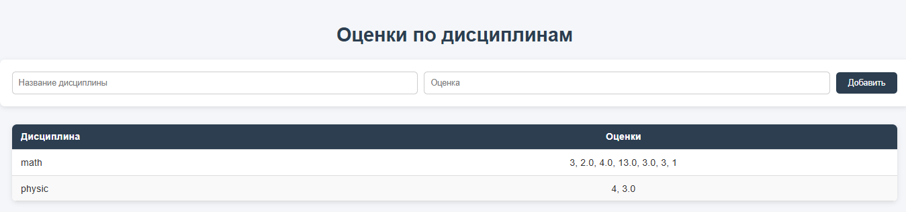

Задание 5: Web-сервер для обработки GET и POST запросов
Краткое описание задания
Реализовать веб-сервер, который принимает и записывает информацию о дисциплинах и оценках через POST-запросы и отображает их через GET-запросы.
Стек реализации
- Язык: Python
- Библиотека: socket
- Протокол: HTTP
Как запускать
- Запустите сервер:
bash python server1.py - Для добавления данных используйте
curlили другой HTTP-клиент:
curl -d '{"discipline":"Math","mark":"A"}' -H "Content-Type: application/json" -X POST http://127.0.0.1:14905/
or
bash
python client1.py
- Для просмотра данных откройте браузер и перейдите по адресу:
http://127.0.0.1:14905/
server
server code
import socket
import traceback
import json
import os
class Request:
def __init__(self, method, target, version, headers, body):
self.method = method
self.target = target
self.version = version
self.headers = headers
self.body = body
class Response:
def __init__(self, status, reason, headers=None, body=None):
self.status = status
self.reason = reason
self.headers = headers or b""
self.body = body or b""
class MyHTTPServer:
def __init__(self, host, port, coding="utf-8"):
self.host = host
self.port = port
self.coding = coding
self.data_file = "task5/server/grades.json"
self.sock = None # نگه داشتن socket برای بسته شدن هنگام Ctrl+C
def serve_forever(self):
self.sock = socket.socket()
self.sock.bind((self.host, self.port))
self.sock.listen(5)
print(f"Server running on {self.host}:{self.port}")
try:
while True:
conn, addr = self.sock.accept()
self.serve_client(conn, addr)
except KeyboardInterrupt:
print("\nServer interrupted by user. Shutting down...")
finally:
if self.sock:
self.sock.close()
def serve_client(self, conn, addr):
print(f"Connection from {addr}")
conn.settimeout(5)
try:
request = self.parse_request(conn)
response = self.handle_request(request)
except Exception:
traceback.print_exc()
response = Response(400, "Bad Request")
finally:
self.send_response(conn, response)
conn.close()
def parse_request(self, conn) -> Request:
data = conn.recv(65535)
if not data:
raise ValueError("empty request")
header_data, _, body_data = data.partition(b"\r\n\r\n")
header_text = header_data.decode(self.coding, errors="replace")
lines = header_text.split("\r\n")
method, url, version = lines[0].split(" ")
headers = {}
for line in lines[1:]:
if line.strip():
key, value = line.split(":", 1)
headers[key.strip()] = value.strip()
body = {}
if headers.get("Content-Length"):
content_type = headers.get("Content-Type", "")
body_text = body_data.decode(self.coding, errors="replace")
if content_type.startswith("application/json"):
body = json.loads(body_text)
elif content_type.startswith("application/x-www-form-urlencoded"):
body = {}
for pair in body_text.split("&"):
if "=" in pair:
key, value = pair.split("=", 1)
body[key] = value.replace("+", " ")
return Request(method, url, version, headers, body)
def load_data(self):
if os.path.exists(self.data_file):
with open(self.data_file, "r", encoding=self.coding) as f:
return json.load(f)
return {}
def save_data(self, data: dict):
with open(self.data_file, "w", encoding=self.coding) as f:
json.dump(data, f, ensure_ascii=False, indent=2)
def handle_request(self, request: Request) -> Response:
if request.method == "GET":
with open(
"task5/server/template_grades.html", "r", encoding=self.coding
) as f:
template = f.read()
data = self.load_data()
rows = "".join(
f"<tr><td>{d}</td><td>{', '.join(m)}</td></tr>\n"
for d, m in data.items()
)
body = template.replace("{{rows}}", rows).encode(self.coding)
headers = (
f"Content-Length: {len(body)}\r\n"
f"Content-Type: text/html; charset={self.coding}\r\n"
).encode(self.coding)
return Response(200, "OK", headers, body)
elif request.method == "POST":
discipline = request.body.get("discipline")
mark = request.body.get("mark")
if not discipline or not mark:
return Response(400, "Bad Request")
data = self.load_data()
if discipline not in data:
data[discipline.strip()] = []
data[discipline].append(str(mark))
self.save_data(data)
headers = ("Location: /\r\nContent-Length: 0\r\n").encode(self.coding)
return Response(303, "See Other", headers, b"")
else:
return Response(405, "Method Not Allowed")
def send_response(self, conn, response: Response):
res_line = f"HTTP/1.1 {response.status} {response.reason}\r\n"
headers_text = response.headers.decode(self.coding, errors="ignore")
if "Content-Length" not in headers_text:
headers_text += f"Content-Length: {len(response.body)}\r\n"
if "Content-Type" not in headers_text:
headers_text += f"Content-Type: text/html; charset={self.coding}\r\n"
full_response = (res_line + headers_text + "\r\n").encode(
self.coding
) + response.body
conn.sendall(full_response)
if __name__ == "__main__":
server = MyHTTPServer("localhost", 14905)
server.serve_forever()
server output
client
client code
import socket
import json
HOST = "localhost"
PORT = 14905
CODING = "utf-8"
def send_post_req(discipline: str, mark: str):
body = json.dumps({"discipline": discipline, "mark": mark})
body_bytes = body.encode(CODING)
request = (
f"POST / HTTP/1.1\r\n"
f"Host: {HOST}:{PORT}\r\n"
f"Content-Type: application/json\r\n"
f"Content-Length: {len(body_bytes)}\r\n"
f"Connection: close\r\n"
f"\r\n"
).encode(CODING) + body_bytes
with socket.socket(socket.AF_INET, socket.SOCK_STREAM) as sock:
sock.connect((HOST, PORT))
sock.sendall(request)
response = sock.recv(4096)
return response.decode(CODING, errors="replace")
if __name__ == "__main__":
try:
while True:
discipline = input("\nEnter the name of the discipline: ").strip().lower()
while True:
try:
mark = float(input("Enter the score: ").strip())
if not 0 <= mark <= 100:
print(
"\033[91mInput must be greater than zero and smaller than 100!\033[0m"
)
continue
break
except ValueError:
print("\033[91mPlease enter a valid number!\033[0m")
resp = send_post_req(discipline, mark)
print("\nServer response:")
print(resp.split("\r\n\r\n", 1))
except KeyboardInterrupt:
print("\n\nInterrupted by user. Goodbye!")
Client Output
client 1:
client 2:
